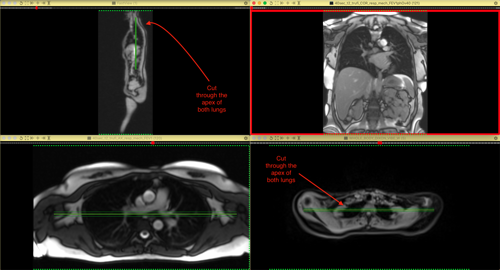

Lung Imaging
This acquisition lasts approximately 30 seconds and aims to acquire the dynamic coronal views of both lungs in deep inspiration and deep expiration.
Prior to starting the acquisition, instruct the patient to "continuously breathe deeply in and out at a steady pace during the scan"
Coronal view slice prescription:
Ensure the FOV covers the entire bilateral lung volumes (both in the S-I and L-R directions).
When centring the FOV, please accommodate the change in the diaphragm locations due to deep breathing.
The image slice should cut through the apex of both lungs while keeping the slice coronal (please do not angle the slice) as shown in Figure 17.

Figure 17. Lung imaging prescription